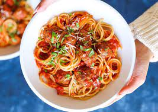
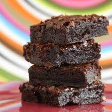

3 colheres de sopa de óleo
1 tablete de caldo de galinha
1 quilo de peito de frango em cubos
2 colheres de sopa de molho de tomate
2 colheres de sopa de mostarda
2 colheres de sopa de ketchup
Champignon a gosto
1 lata de creme de leite sem soro
Modo de preparo - Strogonoff
1. Em uma panela, coloque 3 colheres de sopa de óleo e 1 tablete de caldo de galinha. Espere aquecer para dissolver o tablete. 2. Em seguida, adicione 1 quilo de peito de frango em cubos e deixe dourar. 3. Depois, acrescente 2 colheres de sopa de molho de tomate, 2 colheres de sopa de mostarda, 2 colheres de sopa de ketchup e champignon a gosto. Misture. 4. Desligue o fogo e acrescente 1 lata de creme de leite. Misture novamente. 5. Sirva em seguida.Macarronada
Ingredientes
carne moída a gosto macarrão refogado na manteiga a gosto 1 lata de milho verde 1 lata de ervilha 1 lata de creme de leite 1 lata de molho de tomateModo de preparo - Macarronada
1. Em uma panela, leve a carne moída temperada ao fogo e adicione o milho verde e a ervilha. 2. Misture tudo e deixe cozinhar por 30 minutos. 3. Desligue o fogo e acrescente o creme de leite e o molho de tomate. 4. Incorpore o macarrão refogado na manteiga e misture bem.
Brownie
Ingredientes
5 colheres de manteiga
3 ovos
3 xicara de achocolatado
6 colheres de açúcar
12 colheres de farinha de trigo
Modo de preparo - Brownie
Derreta a manteiga e reserve
1. Enquanto derrete a manteiga, misture os 3 ovos e a açúcar e misture bem
2. Acrescente a manteiga derretida no ovo e o açúcar
3. Agora é so misturar o achocolatado e o trigo
4. Unte uma forma com manteiga e achocolatado
5. Leve ao forno a 180° C por 30 minutos
Bolo de Cenoura

Ingredientes
3 cenouras médias (250g)
4 ovos
meia xícara (chá) de óleo
2 e meia xícaras (chá) de farinha de trigo
2 xícaras (chá) de açúcar
1 colher (sopa) de fermento em pó
Modo de preparo - Bolo de Cenoura
1. Em um liquidificador, bata as cenouras, os ovos e o óleo.
2. Despeje a mistura em um recipiente e misture o açúcar e a farinha de trigo peneirada com o fermento.
3. Coloque em uma fôrma retangular (20 x 30 cm) untada, e leve ao forno médio (180°C), preaquecido, por 40 minutos.